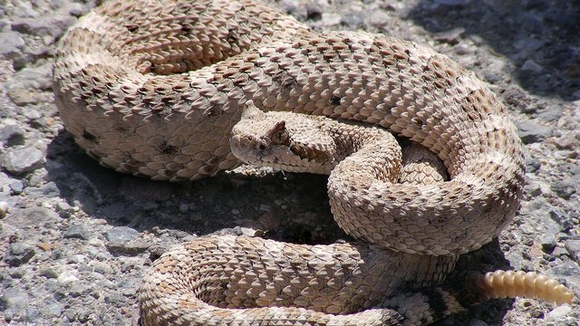

物理5–11 岁约 10 分钟
先躲开再咬才躲得开，迎面硬撞就被咬到？
同一只纸獴。先躲开再咬才躲得开；迎面硬撞就被咬到。差在先躲开再咬还是迎面硬撞，不在换成响尾蛇热坑，也不在硬撞的兽。本页不追真的，观察后洗手。
同一只纸獴，躲开一回，迎面硬撞一回


先躲开再咬才躲得开。迎面硬撞就被咬到。先点「躲开」，再点「试一试」。
先猜一猜，再试
第 1 题：调到 80，先躲开再咬，躲得开吗？
押一个。把滑条调到 80，再点试一试。
第 2 题：调到 10，迎面硬撞，还躲得开吗？
押好后滑条 10，再试一试。
第 3 题：调到 50，刚好一半，算躲得开了吗？
押好后滑条 50，再试一试。
同一只纸獴：先躲开再咬才躲得开；迎面硬撞就被咬到
先点「躲开」再点「试一试」，看躲得开。再点「硬撞」试一次，看是不是被咬到。
纸獴始终是同一只。差在先躲开再咬还是迎面硬撞，不在换成响尾蛇热坑。也不在硬撞的兽。先躲开再咬才躲得开，一迎面硬撞就被咬到。
舞台上的读数是本页比较尺子：滑条 ≥ 80 才算躲得开。刚好 50 还不够。不追真的，观察后洗手。本页用纸板。
躲开图鉴
点一张，对照舞台：谁让先躲开再咬才躲得开，谁让迎面硬撞就被咬到。
点一张图鉴，对照为什么先躲开再咬才躲得开。
猜一猜
同一只纸獴要躲得开，靠的是躲开，还是迎面硬撞？
先押一个，再点「看答案」。
任务：躲开和迎面硬撞都试
先把滑条调到 80 或更高试一次，再调到 20 或更低试一次。两头都点过「试一试」即可完成。
开放式提示不会代替上面的正式任务。
尚未完成：先躲开试一次，或迎面硬撞试一次。
同一只纸獴，先躲开试一次，再对照试一次
舞台上只改一件事：先躲开再咬有多够。同一只纸獴，先躲开试一次，看成不成；再对照试一次，看是不是被咬到。这样比，才知道进去靠的是躲开，不是「换一套就一样」，也不是「响尾蛇热坑」。
回家只带两句：「先躲开再咬才躲得开」；「迎面硬撞就被咬到」。不要写成「越怎样越好」。
够了，台上才躲得开，不是谁许愿就成。
迎面硬撞，就会被咬到；獴要先躲开再咬，不是响尾蛇那种热坑。
响尾蛇热坑另开；本页比先躲开再咬还是迎面硬撞，两句不要并成一句。
不追真的，本页用纸板对照。
这在教什么：孩子要能对躲开和迎面硬撞各报成不成，并否定「响尾蛇热坑」和「换一套就一样」。
- 躲开那一次，躲得开了吗？
- 迎面硬撞，台上还躲得开吗？
- 本页要比响尾蛇热坑吗？
- 能去追真的獴吗？
进去靠先躲开再咬，不是响尾蛇热坑，更不要去追真的
先躲开再咬，才躲得开。这一招只在「先躲开再咬还是迎面硬撞」时才成立。一迎面硬撞，眼前就剩被咬到。
不要把它讲成「越怎样越好」或「换成别的动物就能成」。响尾蛇热坑是另一套。硬撞的兽被咬到。
不追真的。看完按二十秒洗手。本页用纸板。
给家长的问题
- 躲开那一次，孩子指的是这一招，还是在说「它比较猛」？让他再指一次做对的那一下。
- 迎面硬撞，为什么被咬到？哪一句四岁听得懂？
- 如果他说「响尾蛇热坑就能进」——响尾蛇热坑是哪一笔账？本页少的是躲开还是响尾蛇热坑？
- 响尾蛇热坑和獴躲开，差在「点一下」还是「先躲开再咬」？
- 不追真的、看完洗手：红线怎么说？本页能当乱追真动物的课吗？
背后的原理
舞台上不写这些词，留给孩子用眼睛看。獴（Herpestidae）先躲开再咬，才躲得开。迎面硬撞会被咬到。不是响尾蛇那种热坑，也不要让真獴去碰蛇。本页用躲开 ≥ 80 当门槛，≤ 20 算迎面硬撞。刚好 50 不算。
这不是响尾蛇热坑说明书，也不是硬撞的兽。响尾蛇热坑另开，都不要并进本页第一完成句。
人去追活獴会让它受惊。观察后洗手。舞台用纸板。
接下来可以去
带走句：先躲开再咬才躲得开；迎面硬撞就被咬到。獴观察站看真躲开。